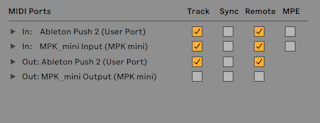
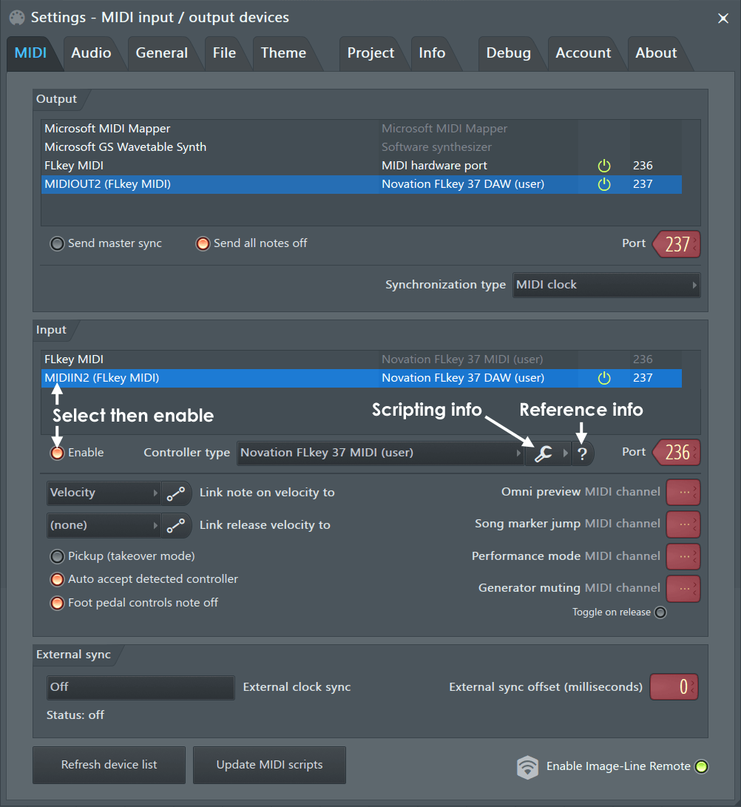

Do loopMIDI ao primeiro fader funcionando.
Siga as etapas na ordem. Primeiro crie a porta virtual no Windows, depois selecione-a no FaderDeck e habilite a entrada na sua DAW. As imagens reais e as ilustrações estão identificadas separadamente.
- 1 · Baixar loopMIDI
- 2 · Instalar
- 3 · Criar porta
- 4 · Deixar ativo
- 5 · Configurar FaderDeck
- 6 · Habilitar na DAW
Baixe o loopMIDI da página oficial
Abra a página de loopMIDI — Tobias Erichsen. Clique no link download loopMIDI. A página oferece um arquivo ZIP; salve-o e extraia o conteúdo antes de executar o instalador.
loopMIDI
Procure a seção de download do programa no site do desenvolvedor.
Este esquema destaca o link a procurar. O layout da página pode mudar; confirme que está no domínio oficial.
Extraia o ZIP e execute o instalador
- Abra a pasta onde salvou o ZIP e extraia os arquivos.
- Execute o instalador que veio dentro do ZIP e siga as telas do assistente.
- Use as opções padrão. Se o instalador solicitar a instalação do driver MIDI virtual ou o Windows pedir autorização durante esse processo, confirme a solicitação esperada do loopMIDI.
- Quando a instalação terminar, abra loopMIDI pelo menu Iniciar.
Abra o loopMIDI e crie a porta FaderDeck
A janela do loopMIDI mostra as portas virtuais existentes e o campo
New port-name. A captura abaixo é real, mas os nomes que aparecem nela
pertencem a outra instalação. Não copie esses nomes.

FaderDeck.
Fonte da captura:
tutorial Silence & Sound sobre loopMIDI. A captura não foi apresentada como screenshot oficial do desenvolvedor.
Agora crie a porta com estes dois controles da janela:
-
Clique no campo
New port-name, apague o valor atual e digite FaderDeck. - Clique no botão + ao lado do campo.
- Confirme que FaderDeck aparece em My loopback MIDI ports. Se já houver uma porta antiga com o mesmo nome, não crie várias cópias; remova ou renomeie a duplicada antes de continuar.
Minimize; não encerre o loopMIDI
A porta só existe enquanto o loopMIDI está em execução. Você pode manter a janela aberta ou minimizá-la para a bandeja do Windows. Não use no menu do ícone uma ação que desative ou encerre o programa.
Para tentar iniciar junto com o Windows, clique com o botão direito no ícone do loopMIDI na área de notificação e ative a opção de inicialização automática em cada logon, se ela estiver disponível na versão instalada. O texto pode variar conforme o idioma. Essa configuração é feita no menu do ícone, não é uma caixa que este guia afirma existir no instalador.
Selecione FaderDeck na administração MIDI
- Abra o aplicativo desktop FaderDeck.
- No ícone do FaderDeck na bandeja do Windows, escolha Portas MIDI e administração…. Esse item abre a rota administrativa local usando a porta ativa do aplicativo.
-
Se precisar abrir o endereço manualmente, o padrão é
http://127.0.0.1:8787/bridge. Se a porta 8787 estiver ocupada, o FaderDeck escolhe outra porta livre; use o endereço exibido pelo app ou o item do menu em vez de presumir que continuará em 8787. - Em Saída MIDI para a DAW, selecione FaderDeck.
- Clique em Aplicar portas MIDI e confirme a mensagem de sucesso. A entrada MIDI opcional é para MIDI Learn de um controlador externo; ela não substitui a seleção da saída.
FaderDeck vem da porta que
você criou no loopMIDI. No macOS, ao contrário, o próprio FaderDeck cria a porta virtual
automaticamente; não crie uma segunda porta IAC com o mesmo nome.
Habilite a entrada e faça o primeiro mapeamento
Se a DAW já estava aberta quando você criou a porta, feche-a e abra novamente. Alguns programas só atualizam a lista de dispositivos MIDI na inicialização. Nos passos abaixo, selecione a entrada FaderDeck (ou a porta loopMIDI com esse nome).
REAPER
Abra Options → Preferences → Audio → MIDI Inputs. Clique com o botão direito na entrada FaderDeck e marque Enable input. Para usar MIDI Learn em parâmetros de FX, marque também Enable input for control messages.
- Abra um projeto de teste e um efeito com um parâmetro ajustável.
- Sobre o parâmetro, abra Param → Learn.
- Mova o fader correspondente no FaderDeck. Feche a janela de Learn e mova o fader de novo para testar.
Referência: guia oficial do REAPER, seção “Using FX Parameter MIDI Learn”.
Ableton Live
No Windows, pressione Ctrl+, para abrir Settings no Live 12 ou Preferences em versões anteriores. Abra Link, Tempo & MIDI e encontre a entrada FaderDeck na seção MIDI Ports. Para mapear parâmetros da interface, ligue Remote. Ligue Track somente se também quiser receber notas de pads em uma faixa MIDI. Sync não é necessário para aprender um fader.

FaderDeck. O destaque marca as colunas Track e Remote.
Fonte:
manual oficial Ableton Live 12, MIDI Ports.
- Ative Remote na linha da entrada FaderDeck.
- Pressione Ctrl+M para entrar em MIDI Map Mode.
- Clique no controle da DAW que deseja comandar e mova o fader no FaderDeck.
- Pressione Ctrl+M novamente para sair do modo de mapeamento e teste o fader.
Referência: manual oficial Ableton Live 12, MIDI and Key Remote Control.
FL Studio
Abra Options → MIDI settings ou pressione F10. Na seção Input, selecione a entrada FaderDeck e clique em Enable. Ao mover um fader, o indicador de atividade MIDI deve piscar.

FaderDeck.
O destaque indica a lista Input e o botão Enable.
Fonte:
manual oficial Image-Line, System Settings — MIDI.
- Para mapear um fader, clique com o botão direito no controle da DAW que quer comandar e escolha Link to controller….
- Mova o fader desejado no FaderDeck. O FL Studio cria o vínculo com o controle que recebeu.
- Se abrir Remote control settings, ajuste somente o que precisar e clique em Accept. Depois mova o fader novamente para testar. Se não houver atividade MIDI, confira se FaderDeck continua selecionado e habilitado na lista Input.
Referência de mapeamento: manual oficial Image-Line, Linking & Using External Hardware Controllers.
Cubase
Abra Studio → Studio Setup → MIDI Port Setup. Localize a entrada FaderDeck e confira se Visible está marcado. Marque In “All MIDI Inputs” se quiser receber a porta como entrada geral de faixas MIDI. Para mapear funções do Cubase, configure uma superfície em MIDI Remote.
- No projeto, abra a aba MIDI Remote na zona inferior e escolha Add MIDI Controller Surface.
- Na janela, selecione FaderDeck como Input Port e crie a superfície.
- Abra Mapping Assistant, mova o fader para selecionar o controle, escolha a função Cubase desejada e clique Apply Mapping.
Referências: manual oficial do MIDI Port Setup e de MIDI Remote e Mapping Assistant.
ChurchDAW
Na versão desktop descrita pela página oficial consultada, a navegação fica em um trilho com os grupos Tocar, Ferramentas e Sistema. Em Sistema, abra Áudio e MIDI e selecione FaderDeck como entrada. Depois, em Ferramentas, abra Mapear MIDI.
- Em Sistema → Áudio e MIDI, escolha FaderDeck como entrada MIDI.
- Em Ferramentas → Mapear MIDI, clique no controle desejado dentro do ChurchDAW.
- Mova o fader do FaderDeck. O ChurchDAW informa que os mapeamentos ficam salvos no projeto.
Referência: site oficial ChurchDAW. Os rótulos de navegação podem mudar em versões futuras; este caminho corresponde à estrutura descrita na página consultada.
Solução de problemas
A porta FaderDeck não aparece na DAW
Confirme que o loopMIDI está aberto e que a porta chamada FaderDeck aparece na lista do próprio loopMIDI. Feche e reabra a DAW depois de criar a porta. No FaderDeck, volte à administração e clique em Aplicar portas MIDI.
A DAW não reconhece uma porta que acabei de criar
Feche completamente e inicie a DAW novamente. Se a porta ainda não surgir, verifique se o loopMIDI continua em execução e se a entrada está habilitada na DAW.
O fader aparece no FaderDeck, mas o parâmetro da DAW não se move
Confira se a saída do FaderDeck está selecionada como FaderDeck e se você clicou Aplicar portas MIDI. Na DAW, habilite a entrada correta, use o modo Learn/Mapping e mova o fader depois de selecionar o parâmetro. Confirme que o controle usa uma mensagem MIDI compatível, como CC.
O celular conecta, mas não chega à DAW
Verifique se celular e computador estão na mesma rede Wi‑Fi, se o Windows Firewall permite conexões do FaderDeck em rede privada, se a saída MIDI correta está aplicada e se a DAW habilitou FaderDeck como entrada. Redes Wi‑Fi para convidados podem impedir que os dispositivos se comuniquem.
A porta some quando reinicio o Windows
Abra o loopMIDI e confirme o nome da porta. No menu do ícone da bandeja, ative a opção equivalente a autostart a cada logon. A porta só existe enquanto o loopMIDI está em execução.
Fontes e imagens
Os passos MIDI foram conferidos nas páginas oficiais de cada programa. As figuras com o rótulo “Captura real” preservam imagens existentes; as demais são esquemas produzidos para indicar somente os nomes e as ações confirmados no código ou na documentação.
- loopMIDI — página oficial e download.
- Silence & Sound — origem da captura real da janela loopMIDI.
- Ableton Live 12 — MIDI and Key Remote Control.
- Image-Line — configurações MIDI do FL Studio.
- Image-Line — Link to Controller e parâmetros de automação.
- Steinberg — Cubase MIDI Port Setup.
- Steinberg — MIDI Remote e Mapping Assistant.
- Cockos — guia oficial do REAPER.
- ChurchDAW — site oficial e recursos da versão desktop.